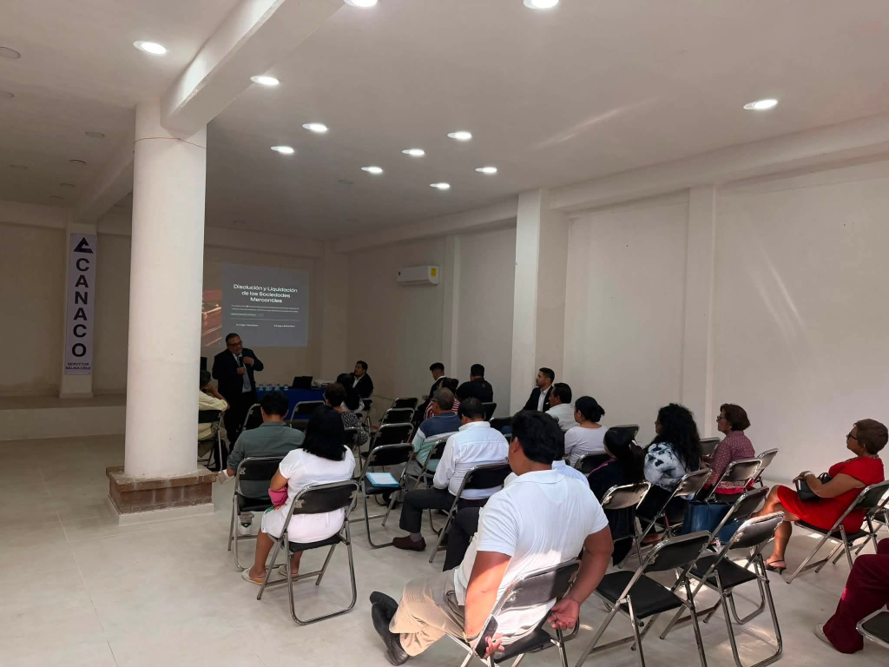

Salina Cruz, Oaxaca · 25 años impulsando la profesión contable
con ética, capacitación y compromiso gremial.
El Colegio de Profesionales de la Contaduría de Oaxaca A.C. – Sección Istmo es la máxima representación gremial de los contadores públicos en la región del Istmo de Tehuantepec. Desde nuestra fundación, trabajamos para elevar la calidad y el prestigio de la profesión contable en Salina Cruz, Oaxaca y toda la región.
Representar, capacitar y defender los intereses de los profesionales de la contaduría pública en el Istmo de Tehuantepec, promoviendo el cumplimiento de los más altos estándares éticos y técnicos, y contribuyendo al desarrollo económico y social de la región mediante la actualización permanente y la solidaridad gremial.
Ser la institución líder y referente de la contaduría pública en el sur-sureste de México, reconocida por la excelencia técnica de sus agremiados, la solidez de su programa de capacitación continua, su compromiso ético irrenunciable y su impacto positivo en el desarrollo económico de las empresas y personas de la región istmeña.
Integridad: Actuamos con honestidad y transparencia en todo momento. Competencia Profesional: Buscamos la excelencia técnica y la actualización constante. Objetividad: Emitimos juicios imparciales basados en evidencia. Confidencialidad: Resguardamos la información de nuestros clientes. Comportamiento Profesional: Cumplimos las normas y reglamentos vigentes con orgullo.
✅ Respaldo institucional ante el SAT y autoridades fiscales
✅ Acceso a capacitación con precios preferenciales para asociados
✅ Red de contactos con los mejores profesionistas de la región
✅ Certificación y acreditación profesional reconocida a nivel nacional
✅ Representación gremial ante organismos públicos y privados
✅ Actualización permanente en materia fiscal, financiera y de auditoría
El Colegio de Profesionales de la Contaduría de Oaxaca A.C. – Sección Istmo ofrece un amplio catálogo de servicios diseñados para el crecimiento profesional, la actualización técnica y la defensa gremial de todos nuestros asociados y de la comunidad contable del Istmo de Tehuantepec.
Organizamos cursos, talleres, diplomados y seminarios especializados en temas fiscales, financieros, auditoría, derecho corporativo y normas de información financiera (NIF). Nuestros programas están diseñados para mantener a nuestros asociados a la vanguardia de los cambios normativos y legislativos que afectan su ejercicio profesional.
Al unirte al Colegio formas parte de la red de profesionales de la contaduría más sólida del sur-sureste de México. Obtienes respaldo institucional, credencial que acredita tu membresía activa, representación ante organismos nacionales e internacionales, y acceso a beneficios exclusivos para asociados.
Realizamos eventos de alto nivel académico con ponentes de talla nacional e internacional. Nuestros congresos abordan la actualidad económica, fiscal y contable del país, ofreciendo un espacio de networking, actualización y reflexión para todos los profesionales de la región.
Representamos los intereses colectivos de los contadores públicos ante autoridades fiscales, hacendarias, gubernamentales y judiciales. Gestionamos ante el SAT, IMSS, INFONAVIT y otras dependencias para proteger el ejercicio legal y ético de nuestra profesión en la región del Istmo.
A través de nuestros asociados certificados, brindamos orientación especializada en la interpretación y correcta aplicación del Código Fiscal de la Federación, la Ley del ISR, IVA, IMSS y demás disposiciones fiscales vigentes para empresas y personas físicas de la región.
Fomentamos alianzas estratégicas entre profesionales contables certificados, empresas, cámaras de comercio e instituciones educativas y gubernamentales de la región. Generamos oportunidades de desarrollo, empleo y colaboración que benefician a todo el ecosistema empresarial del Istmo.
Profesionales de la Contaduría Pública que integran el Colegio de Profesionales de la Contaduría de Oaxaca A.C. – Sección Istmo.
Fotos, videos y momentos reales de nuestras jornadas de capacitación en el Istmo de Tehuantepec.
📰 Últimas publicaciones
📅 Próximos eventos

Seminario impartido en las instalaciones de CANACO Salina Cruz. Nuestros asociados y asistentes recibieron formación especializada en derecho corporativo aplicado a la contaduría pública.
Ver más en Facebook →Haz clic para ver los videos en nuestra página de Facebook
Momentos reales de nuestras jornadas de capacitación
Inscríbete y mantente actualizado
Síguenos en Facebook para estar al tanto de todos nuestros cursos, seminarios y transmisiones en vivo.
Un cuarto de siglo impulsando el desarrollo profesional contable en el Istmo de Tehuantepec. Desde 1999, el Colegio de Profesionales de la Contaduría de Oaxaca A.C. – Sección Istmo ha sido el pilar institucional que agrupa, representa y capacita a los contadores públicos de Salina Cruz y toda la región istmeña.
Nace el Colegio de Profesionales de la Contaduría de Oaxaca A.C. – Sección Istmo en Salina Cruz, Oaxaca, como respuesta a la necesidad de contar con una instancia gremial sólida que representara los intereses de los contadores públicos de la región ante autoridades y organismos nacionales.
Organización de los primeros magnos eventos fiscales y contables de la región, con la participación de ponentes nacionales e internacionales. Estos eventos posicionaron al Colegio como referente académico en el Istmo y el sur del país.
Crecimiento sostenido en el número de asociados activos y consolidación del programa de capacitación continua. Se fortalecieron los vínculos con el IMCP nacional, CANACO, CANACINTRA y otras cámaras empresariales de la región del Istmo de Tehuantepec.
Celebración de 25 años de excelencia, ética y compromiso gremial ininterrumpidos. Un logro que es el resultado del trabajo colectivo de todos nuestros asociados, expresidentes y colaboradores que han construido esta institución a lo largo de un cuarto de siglo al servicio de la profesión contable en Oaxaca.
¿Tienes dudas sobre nuestros eventos, membresías o necesitas asesoría? Escríbenos.
Salina Cruz, Oaxaca, México